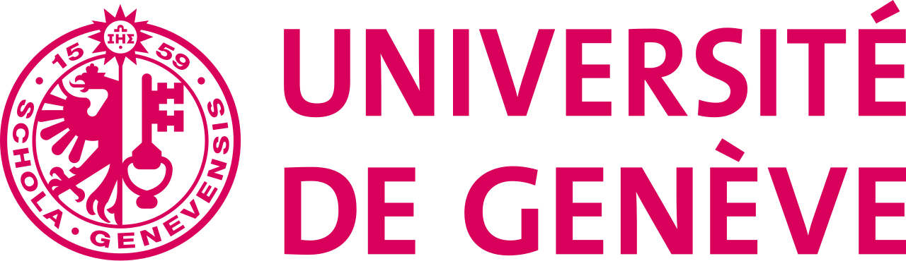
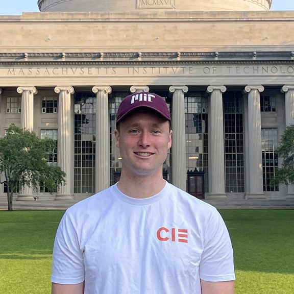

Techno-solutionism
We will question the assumption that more models, agents, or dashboards will automatically fix fragmented health systems.
Reimagining Health Innovation
A Geneva gathering on healthcare AI, global health, patient voices, and who gets to evaluate the systems that shape care.
AI as a Catalyst Geneva is a three-day gathering for people willing to push past the easy story that new technology will automatically repair healthcare. It treats patients as co-designers and asks participants to work upstream from symptoms toward root causes.
Geneva is where much of global health policy gets written. The day asks what happens when AI systems built in one place are evaluated, procured, and governed for many others, and who is in the room when those decisions are made.
The working languages will be English and French. The goal is to grow a Geneva community that keeps working on projects, workshops, and public conversations after the event.

Small mixed tables, each with a mentor.
We will question the assumption that more models, agents, or dashboards will automatically fix fragmented health systems.
Teams will test how answers change across French, English, and other languages patients in Geneva actually speak, and whose context a model assumes.
We will explore relational accountability: the shared guardrails communities build when law, procurement, and institutions cannot keep pace.
The schedule below is a working structure. The plan for each day, session names, and timing will be refined as workshop materials are selected.
[VENUE] · Geneva
[VENUE] · Geneva
The day-by-day program for March 2 and 3 is still being planned and will be shared here as sessions are confirmed.
Participants run the same healthcare scenario through several models and languages, then build criteria that matter to patients, caregivers, and clinicians.
Health AI Systems Thinking for Community uses recent papers as starting points for imagining failure modes, abuse cases, guardrails, and shared accountability.
Teams work backwards from visible pain points to the social, institutional, and economic drivers that make many technical fixes too shallow to last.
MIT Critical Data · Harvard Medical School
Leo Anthony Celi is part of the team behind the Medical Information Mart for Intensive Care or the MIMIC database, now stewarded by over 100,000 credentialed students and researchers across six continents. The group has championed open science not as a methodological preference but as a moral imperative: knowledge generated from patients must be returned to communities, not sequestered behind institutional gatekeeping. The work is anchored on the conviction that science must earn, and continually re-earn, its place in the public trust, and insists that rigorous inquiry must be humble enough to learn from lived experience and ways of knowing that resist quantification.
Through workshops and hands-on data analysis across the globe, his team surfaces that modeling data without understanding how it came to be – what political, economic, and cultural forces shaped its collection, its silences, and its distortions – is epistemic violence. Such is like cooking without knowing the ingredients: whether there are nuts, shellfish, meat, or worse, cyanide. The dish may taste exquisite to those who sit comfortably at the table, but it is poison to those whose conditions were undertreated, whose pain was disbelieved, whose bodies were rendered invisible by the very systems the data was drawn from. A model trained on such data does not merely inherit these harms; it industrializes them, encoding historical injustice into algorithmic certainty and deploying it at scale.
Savannah Global Health Institute (PiAf) · Global Health Fellow
Johns Hopkins University School of Medicine · MIT

MIT
University of British Columbia
University of Geneva · Department of Radiology and Medical Informatics
Capacity is intentionally limited so participants can work closely with mentors and each other. The event is free to attend; food and refreshments are planned.
Use the application form to share your interest in joining the Geneva gathering.
Apply via form